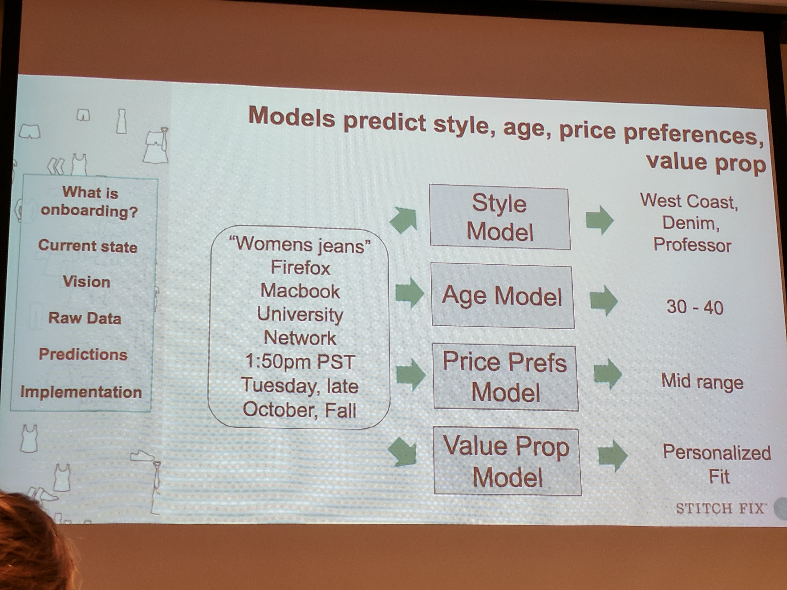

Machine Learning for Your Project
Everyday Applications of Artificial Intelligence
Oliver Zeigermann / @DJCordhose
AI (Artificial Intelligence)/ ML (Machine Learning) is Opportunity

Gretchenfrage
What kind of data do you have or what kind of data would you be able to collect?
Your answer determines how can you benefit from machine learning
Data is the fuel and machine learning is the engine
You need both
First a look at the different types of engines
Different Types of Machine Learning
AlphaGo #1 @Go using Reinforcement Learning
(...) we had it play against different versions of itself thousands of times, each time learning from its mistakes and incrementally improving until it became immensely strong, through a process known as reinforcement learning.
However
Unsupervised Machine Learning in Google Sheets
Correlations, Outliers, etc.
Supervised Machine Learning by fun example
Now let's have a look at the different types of data
Some data is more valuable than other
In General: The more, the better
You can often compensate quantity with quality, though
And sometimes also the other way round
What kind of data
- Log data
- Transaction data
- Structured, tabular data (like from an Excel Sheet)
- Speech
- Text
- Image data
Is it labelled?
Only if it is labelled, it qualifies for supervised learning
If it is not labelled, would it be realistic to label it now?
What quality
- unstructured (heterogeneous) / structured
- complete / incomplete
- without errors?
Examples
We will mainly see Supervised and Unsupervised Learning, rarely Reinforcement Learning
A small amount (1000 - 5.000) of labelled images
Is that good data? MAYBE
It depends on how many categories (or is it continuous?) to predict and on the variation and content (common / special) of the images
Might qualify for supervised learning with Convolutional Neutral Networks
Huge amounts (TB) of unstructured (heterogeneous) log data
Is that good data? NO
If data is not even of the same category, how do you even tackle it. Hardest challenge, even with lots amounts of data
A decent amount (> 10.000) of complete and labelled structured data
Is that good data? YES
The best you can possibly have. This is a real asset
Qualifies for supervised learning with a variety of learning strategies
Medium size (GB) of structured time series data
Is that good data? Probably YES
Qualifies for Unsupervised Learning. Possibly there are a lot of insights hidden in the data
Actual Applications
For some more inspiration
Real World AI is booming
First of all
What does not work, (yet)?
Might be surprising
(I) Autonomous Cars
(II) Singularity
The singularity is the hypothesis that the invention of artificial superintelligence will abruptly trigger runaway technological growth, resulting in unfathomable changes to human civilization. According to this hypothesis, an upgradable intelligent agent (such as a computer running software-based artificial general intelligence) would enter a "runaway reaction" of self-improvement cycles, with each new and more intelligent generation appearing more and more rapidly, causing an intelligence explosion and resulting in a powerful superintelligence that would, qualitatively, far surpass all human intelligence.
Claimed Cause: exponential growth
Many notable personalities, including Stephen Hawking and Elon Musk consider the uncontrolled rise of artificial intelligence as a matter of alarm and concern for humanity's future. The consequences of the singularity and its potential benefit or harm to the human race has been hotly debated by various intellectual circles.
Verdict
Factually, there just is no exponential growth
We are currently nowhere near such a singularity and there is no existing technology to make it happen
What does work, however
Might also be surprising
(I) Image Recognition
Face Detection
What also works in that area
- Image moderation (what is in that picture)
- Facial analysis
- Celebrity recognition
Models going unemployed?
Only two of these images are actual images

https://twitter.com/goodfellow_ian/status/918900712901197824
All others generated by neural networks
Salesclerks going unemployed?
Minimal information sufficient for value prop
More applications include
- Medicine: Many AI System are at the same level as human doctors (e.g. skin cancer screening)
- Recommendation Systems: Spotify and Netflix know me better than I do
- Making decisions: Should you be granted private health insurance or a loan
- Fraud Detection: AI can detect Credit Card Scams and other suspicious activities (tax declarations)
- Predictive Maintenance: AI systems tell you when to repair something before it is breaks
Wrap-Up
- If you have data lying around, possibly you have a great treasure
- Data can be of different quality, though
- Larger amounts of high quality data probably are valuable
- You can not just throw your data at AI and hope to get something out
- You also need to have knowledge of Machine Learning and how it works
Oliver Zeigermann / @DJCordhose
Slides:
http://bit.ly/ml-sipgate
The doctor is IN
Time for your questions and use cases
Oliver Zeigermann / @DJCordhose
Slides:
http://bit.ly/ml-sipgate